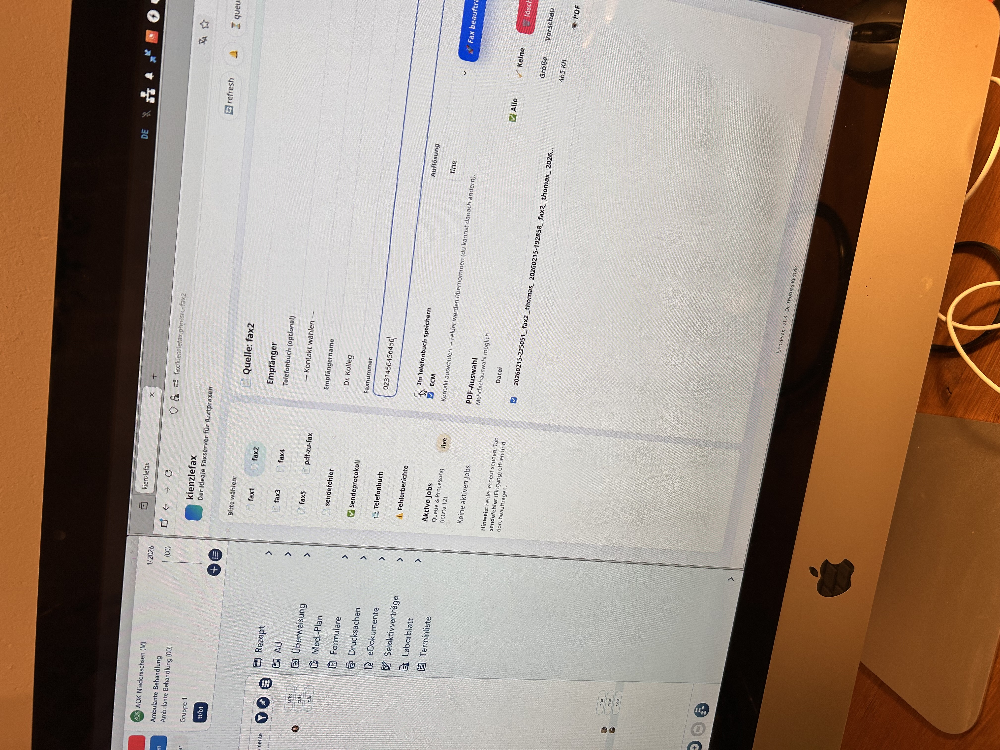

kienzlefax



kienzlefax – der ideale Faxserver für die Arztpraxis
Workflow statt Zettelwirtschaft.
Drucken, auswählen, senden – mit klarer Queue, zuverlässigem Versand und sauberem Archiv.
Für Arztpraxen optimiert – und für alle anderen, die viel faxen.
Open Source. Linux. HylaFAX. Asterisk. Self-hosted.
Workflow statt Zettelwirtschaft:
Kein „Fax auf Fax“, keine Toner-Überraschungen – wichtige Befunde bleiben lesbar und jedes Dokument landet nachvollziehbar im Archiv.
Installation und Konfiguration erfolgen direkt über das Repository: https://github.com/thomaskien/kienzlefax-fuer-linux Die README beschreibt: - Einrichtung unter Ubuntu LTS - SIP-Anbindung über Asterisk - Versand über HylaFAX - Einrichtung der Faxdrucker - Archiv- und Fehlerstruktur
Voraussetzungen
- Linux-Server oder VM (Ubuntu LTS empfohlen)
- SIP-fähige Faxnummer
- Netzwerkzugriff der Arbeitsplätze
- Grundkenntnisse in Linux-Administration
Nach der Einrichtung sollte der Server abgesichert werden: starke Passwörter, SSH nur mit Key, Firewall-Regeln, fail2ban zum Schutz vor Brute-Force-Angriffen.
Ablauf
- Am Arbeitsplatz auf einen der Faxdrucker drucken oder eine PDF-Datei im vorgesehenen Ordner ablegen
- Im Web-UI Empfänger auswählen und Versand starten
- kienzlefax verschickt jedes Dokument einzeln – auch mehrere nacheinander an dieselbe Nummer
- Sendebericht und Dokument werden automatisch zusammengeführt und archiviert
- Optimales Management von Sendefehlern: Fehlgeschlagene Faxe werden klar getrennt abgelegt. Das Originaldokument bleibt unverändert erhalten, der Sendebericht dokumentiert den Fehler eindeutig – volle Transparenz.
Technische Einordnung
- HylaFAX für den stabilen Faxversand
- Asterisk für die SIP-Anbindung
- Ghostscript für die PDF-Aufbereitung
- CUPS für die Faxdrucker-Integration
- Samba für die Windows-Anbindung
- Getrennter Worker-Dienst mit klarer Queue-Struktur